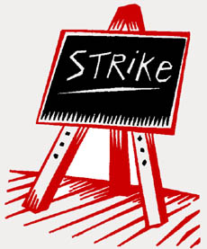

All workers in educational institutions.
Submitted on Sat, 09/30/2006 - 1:44pm
Disclaimer - The following article is reposted here because it is an issue with some relevance to the IWW. The views of the author do not necessarily agree with those of the IWW and vice versa.
Some Claim the Current Business Strike Will Be Used as Pretext for Repression
By Hermann Bellinghausen - La Jornada, September 28, 2006 OAXACA CITY, Sep. 27: In a city permeated by tension in the face of widespread rumors of immanent attacks by Institutional Revolutionary Party-aligned “shock troops” and corresponding intervention by federal police, the state teachers’ union agreed to continue its struggle “in a massive and united fashion… until the fall of the tyrant Ulises Ruiz Ortiz is achieved, and only then begin the school year.” Enrique Rueda Pacheco, general secretary of the local Section 22 of the National Union of Education Workers, publicized the agreements through a new consultation with the rank-and-file on the continuation of the strike, which began 129 days ago.
Submitted on Thu, 06/15/2006 - 1:34am
In its latest violent atrocity against labour and social movements, the Mexican government has attacked striking Mexican teachers, leaving five dead. For over two weeks the Mexican teachers' union section in Oaxaca state has been carrying out an incredible campaign of growing protests and direct actions in support of their demands for higher wages and increased school funding. At their most recent march a few days ago in the state capital, over a 120 000 people participated. The teachers' movement in Oaxaca has broad popular support and has linked up with other labour and human rights struggles.
The state government of Oaxaca, and possibly soon the federal government as well, have chosen to attempt to violently repress this movement, as Mexican authorities did with the attack by thousands of police on the townspeople of Atenco on May 3-4 leaving two dead, and the attack by police on striking steel workers in the city of Lazaro Cardenas late last April, leaving three workers dead. Please read the message on the current situation in Oaxaca and if you're able, get in contact with other people and organize a protest at a consulate office of the Mexican government nearest you.
Submitted on Sun, 04/23/2006 - 11:55am
By Rick Harrison - Home News Tribune staff writer, April 22, 2006.
RUTGERS — Twenty-one students marched, cheered and chanted on the College Avenue Campus yesterday to protest Gov. Jon S. Corzine's proposed $169 million higher education budget cuts.
Organized in part by the Student and Education Workers Union, the protesters first camped out behind, then in front of and inside the entrance of the Old Queens administrative building. At one point, they marched around a parked UPS delivery truck.
Shaking plastic bottles partially filled with dried beans, protesters chanted, "Student freedom, workers rights, one struggle, one fight."
"This is a direct action," said Mike Mangarelli, a 20-year-old Livingston College sophomore. "We want to unite the faculty and students. The budget cuts connect us all. We want to send a message to the governor and the people in Trenton that they are not going to be able to do this without us putting up a fight."
Kaylin Padovano, a 19-year-old Rutgers College sophomore, said she was concerned about potential tuition hikes if Rutgers loses an estimated $114 million in state aid.
"I went here because it was a reasonable price," Padovano said, endorsing the protest as a way of reaching decision-makers in Trenton. "I think we should be the one's they listen to. The country is going to be in our hands."
Another student-led protest is scheduled Thursday outside the Statehouse in Trenton. The Legislature must adopt a final budget by July 1.
The protesters also targeted university President Richard L. McCormick, who arrived on the driveway to his office building appearing perplexed by Industrial Workers of the World flags and signs that read "Higher Education is Under Attack" and "Staff, Faculty, Students Unite!!!"
Submitted on Mon, 03/20/2006 - 3:39am
Disclaimer - The following article is reposted here because it is an issue with some relevance to the IWW. The views of the author do not necessarily agree with those of the IWW and vice versa.
Reposted from www.libcom.org - March 20, 2006
 A fresh wave of protests has hit France as students, school pupils and workers continue the occupations, blockades and rioting against the first employment contract (CPE).
A fresh wave of protests has hit France as students, school pupils and workers continue the occupations, blockades and rioting against the first employment contract (CPE).
This is just a short summary of the events being updated regularly on http://libcom.org/blog - the most comprehensive and up-to-date English coverage of the struggle against the CPE anywhere on the web.
Scores of high schools and around 70% of universities are occupied today.
In many areas teachers have been joining their pupils in the protests, with several thousands demonstrating in Limoges, Boulougne, Le Havre and many other towns and cities across France.
The Monteil school in Rodez, the largest school in Aveyron with 1,600 pupils, was occupied and shut down with barricades. Fifteen schools in Seine-Saint-Denis, the scene of last years riots by suburban youths, are occupied. Many young people from the banlieus are preparing to join in the demonstration in Paris later today. Around 1,000 high school pupils have blocked a motorway in Nice whilst 200 pupils did the same in Vitry-on-Seine.
This is a strong sign that the struggle is circulating and extending outside the universities to France's disaffected working class youth - the focus of mass civil unrest in November last year. The increasing numbers of lecturers and teachers on strike and supporting the protests, and the railway and motorway blockades, along with support from France's major unions, all point to a struggle which is encompassing an ever wider section of France's society.
To keep up-to-date on the events in France, look at http://libcom.org/blog
Submitted on Thu, 03/09/2006 - 12:39pm
New York, NY, 07 March 2006 - From Next Left Notes
Two members of the PACE University SDS chapter were detained for an extended period by Secret Service agents on March 5th. Lauren Giaccone and Brian Kelly, members of the new Students for a Democratic Society (SDS), were detained for heckling former president Bill Clinton, calling him a "war criminal" for his ad hoc bombing-for-peace initiatives in Yugoslavia, the Sudan, Iraq and elsewhere. Clinton was speaking at the Pleasantville campus of PACE University in Westchester, NY.
Lauren Giaccone and Brian Kelly are both students at the Pace University Downtown campus. The students had formed a peaceful picket outside of the Westchester campus event on Sunday but had their banners confiscated for no apparent reason by Pace security. Giaccone and Kelly were issued valid tickets to the Clinton speech after their anti-war banners were seized and given to the Secret Service. The banners have not been returned although the students were released after Pace indicated no charges would be filed. Giaccone, a junior and political science major, reports that she was told "the Secret Service needs the banners for their investigation" which includes a "background check" and other forms of what Giaccone describes as harassment. Giaccone feels her membership in SDS is a key factor in the continued interest on the part of the university president, David A. Caputo, and the various security services which appear largely unaccountable for their actions.